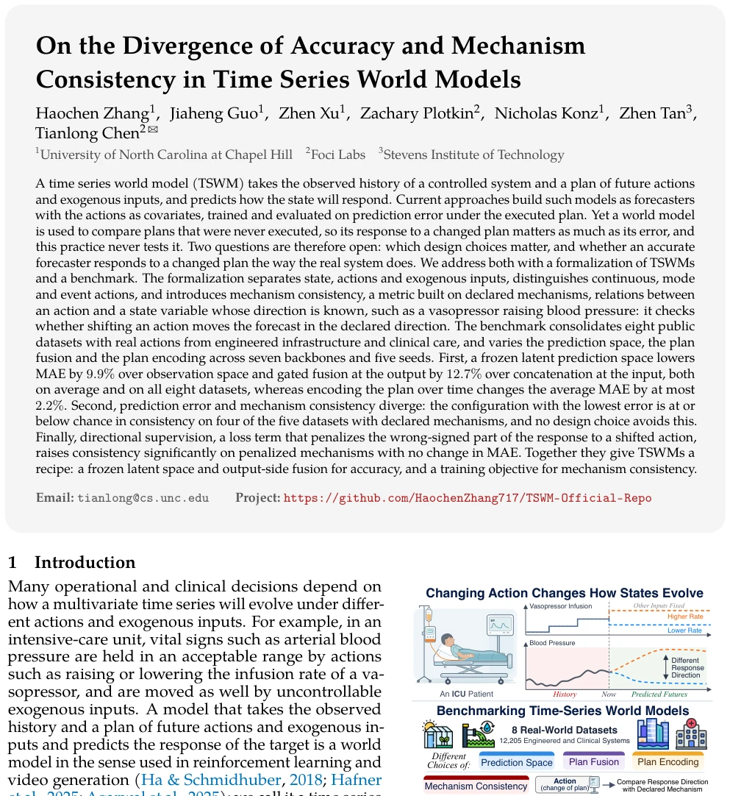
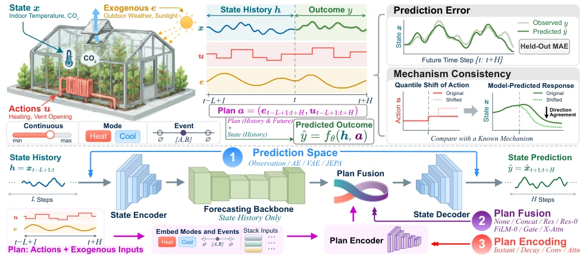
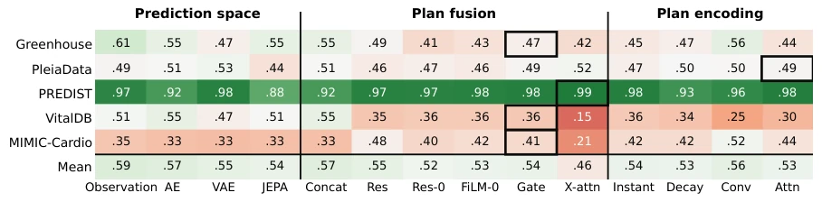
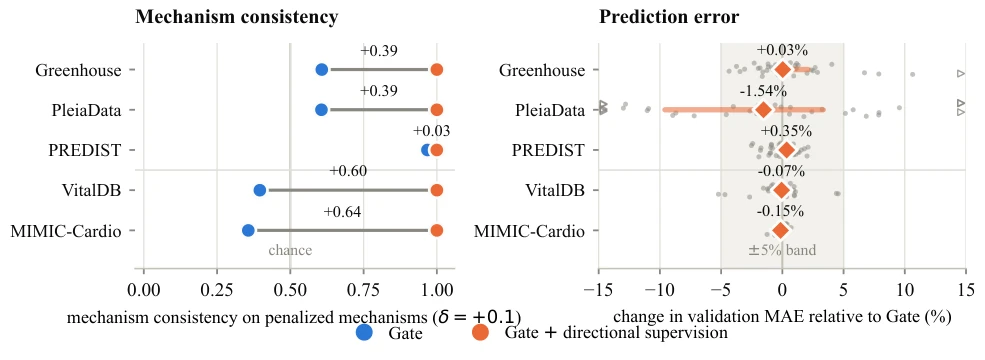

This paper pours cold water on Time Series World Models (TSWM). The industry generally believes that low prediction error equates to a good model, but the authors find this is often a trap. The most accurate prediction models may perform worse than random guessing on "mechanistic consistency". Like a student who only memorizes standard answers, once the question is phrased differently, it gets confused. The authors not only sharply pointed out the awkward status quo of "accuracy and mechanism decoupling", but also provided a simple and rough solution: directional supervision. Although not modifying the complex network architecture, changing the loss function allows the model to learn to "tell the truth", responding to action changes in accordance with physical or pharmacological common sense. However, this method has a hidden danger: relying on prior knowledge, if the mechanism direction is given incorrectly, the model will become a stubborn "contrarian", treating errors as truth.
研究动机Motivation
TSWM 本应用于规划决策，但现有工作多将其视为协变量预测器（Das et al., 2023; Lim et al., 2021）。世界模型需比较未执行计划，但现有基准（Hafner et al., 2019; Hafner et al., 2025）多在仿真器测试，缺乏真实动作下的机制一致性评估。Crasson et al. (2024) 指出预测精度与因果准确性可分离。现有实践从未测试模型对未执行计划的响应，导致模型可能拟合观测相关性而非因果机制。本文旨在填补这一空白，确保模型对动作变化的响应符合物理或药理机制，而非仅拟合训练数据中的观测相关性，这对 ICU 或工程控制等高风险场景至关重要。
TSWMs are originally intended for planning and decision-making, but existing work mostly treats them as covariate predictors (Das et al., 2023; Lim et al., 2021). World models need to compare unexecuted plans, but existing benchmarks (Hafner et al., 2019; Hafner et al., 2025) are mostly tested in simulators, lacking mechanistic consistency evaluation under real actions. Crasson et al. (2024) point out that prediction accuracy and causal accuracy can be separated. Existing practices have never tested the model's response to unexecuted plans, leading to models potentially fitting observational correlations rather than causal mechanisms. This paper aims to fill this gap, ensuring the model's response to action changes conforms to physical or pharmacological mechanisms, rather than merely fitting observational correlations in training data, which is crucial for high-risk scenarios such as ICU or engineering control.

Figure 1: Two plans from the same history. We sweep three design choices and score mechanism consistency.
The paper formalizes TSWM as states, actions (continuous/categorical/event), and exogenous inputs. Constructed a benchmark containing 8 real datasets, covering engineering and clinical scenarios. The model architecture includes a state encoder, backbone predictor, and plan fusion module. Designed a search space scanning prediction spaces (Observation/AE/VAE/JEPA), fusion methods (Concat/FiLM-0/Gate, etc.), and plan encoding. The core innovation is "directional supervision": for declared mechanisms, perturb action channels; if the predicted response direction is opposite to the declared sign, apply a penalty. This loss term is added to the training objective, not changing the network structure, only constraining the sign of the decoded state response. Counterfactual plans are generated via quantile shift, calculating the sign consistency of prediction differences, backpropagating to correct wrong directions, ensuring the model maintains mechanistic correctness even under unseen actions. Additionally, the paper systematically compares different fusion strategies, finding output-side modulation superior to input concatenation, providing clear guidelines for TSWM design.

Figure 2: Overview of the formalization and the model. Top: the channel roles, the window of history, plan and outcome, and the two metrics (Section 3.1). Bottom: the model and its three design choices (Section 3.2); the concatenation baseline conditions the backbone instead (Appendix B).
实验Experiments
使用 8 个数据集（工程/临床），7 种骨干网络，5 个种子。评估指标为 MAE 和机制一致性（MC）。发现冻结 AE 潜在空间 + 输出侧融合（Gate/FiLM-0）MAE 最低。但在 5 个有声明机制的数据集中，最低 MAE 配置的 MC 接近随机水平，临床数据甚至学反了符号。引入方向性监督后，MC 提升至 0.99 以上，MAE 无显著变化。证明一致性源于训练目标而非架构。消融实验显示计划编码记忆无一致增益，验证了输出侧融合优于输入拼接。
Used 8 datasets (engineering/clinical), 7 backbone networks, 5 seeds. Evaluation metrics are MAE and Mechanistic Consistency (MC). Found that frozen AE latent space + output-side fusion (Gate/FiLM-0) has the lowest MAE. However, in the 5 datasets with declared mechanisms, the MC of the lowest MAE configuration was near random levels, clinical data even learned the wrong sign. After introducing directional supervision, MC improved to above 0.99, MAE showed no significant change. Proving consistency stems from the training objective rather than architecture. Ablation experiments show plan encoding memory has no consistent gain, validating output-side fusion is superior to input concatenation.

Figure 3: Mechanism consistency of the three sweeps. MC at δ = ±0.1, averaged over both directions, the declared mechanisms and the runs of Table 3. White is chance, green agrees with the declared sign, red opposes it. Boxes mark the lowest-MAE choice of each row. None is omitted because its forecast does not move. Numbers are in Appendix E.

Figure 4: Directional supervision against the Gate control. Left: mechanism consistency (MC at δ = +0.1) on the penalized mechanisms, mean over the 35 backbone–seed runs of each dataset, with the paired gain. Right: change in validation MAE relative to Gate per run, with the median (diamond), a 90% interval (bar) and the ±5% band (shaded).